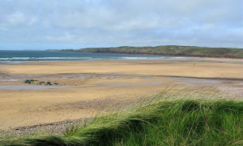
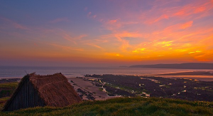

Freshwater West
Freshwater West Beach is just one mile from Pen-y-Holt Farm. It is a wide, sandy, beautiful beach and is backed by extensive sand dunes which are the largest in all of Pembrokeshire. The area around Freshwater West is a SSSI (Site of Specific Scientific Interest) and is renowned for its butterflies. Even on a hot Summer’s day the beach is never crowded because of its sheer size and length, there is always plenty of room for families to set up a game of sand cricket or fly kites. The sand dunes are a great way for kids to wile away the hours exploring and playing. The water quality is rated as pristine, the highest rating available. It is a haven for surfers and great for boogie boarding and all other water-sports. Freshwater West is perfect for paddling and exploring rockpools, but because of the offshore swells is unsuitable for swimming. Surf lessons and equipment hire are available at Freshwater West with Outer Reef.
{kind=link}
In June 2011, Alf Alderson writing for The Telegraph recommended Freshwater West as Beach of the Week. It hosts the Welsh National Surfing Championships during the first bank holiday weekend of May. It has also been a film set for Harry Potter, Robin Hood and The Sarah Jane Adventures.
There are two car parks at either end of the beach, which can get busy during the height of Summer, but there is an overflow car park up the hill. At the car park to the southern end of the beach, there are toilets, an emergency telephone and a mobile cafe which serves a range of drinks and snacks. You may want to pack a picnic for a more substantial lunch. There are no toilet facilities at the northern car park. At the northwest end of the beach high on the dunes is a War Memorial. To the south of the beach there is a thatched shack on the foreshore which is a rebuilt shelter that was used for drying a certain type seaweed, used for making Lava-bread, a Welsh speciality that is very good for adding flavour to recipes. If you visit Freshwater West at a very low tide you may see the remains of a drowned forest.
Freshwater West is dog friendly beach, open all year round and there is a fresh water stream for dogs to drink from. There are many beautiful coastal walks around Pembrokeshire and below is a video of the walk from Freshwater West beach to Angle Bay.
Welcome to Pen-y-Holt
 A welcome message from Anne, the owner of The Granary and The Byre.
A welcome message from Anne, the owner of The Granary and The Byre.